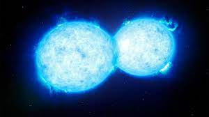

فرضية السديم
هي الفرضية الرئيسية بين العلماء، التي تنص على أن الكواكب تشكلت من سحابة من المواد المرتبطة بالشمس الفتية، التي كانت تدور ببطء. في وقت لاحق من عام 1900، لاحظ توماس شراودر تشامبرلين وفورست راي مولتون أن هناك نجم جوال يقترب من الشمس.
الفلكيين في العقود الأخيرة من القرن العشرين وهي تناقش أصل كوكب الأرض حيث اقترح الفيلسوف الألماني إيمانويل كانت في عام 1755هي ان الفكرة القديمة التي توصل إليها العلماء
